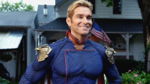
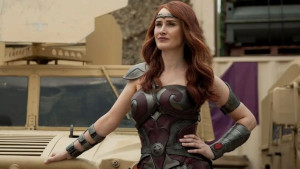
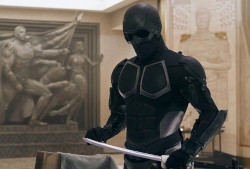
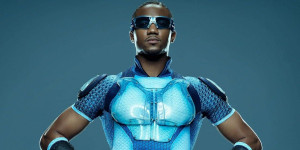
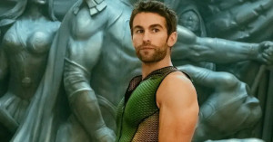
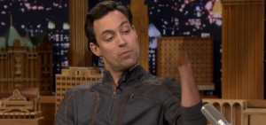
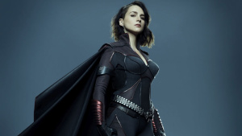

Os Sete
Capitão Pátria
Capitão Pátria é o personagem mais poderoso de The Boys, principalmente porque ele foi feito para ser o "super-herói perfeito". Não é à toa que, em sua essência, o personagem é uma paródia do Superman da DC Comics - embora sua personalidade seja bem caótica e imprevisível. Ele possui superforça, durabilidade, resistência e reflexos sobre-humanos, pode voar e até mesmo disparar rajadas de energia pelos olhos. Se isso não for o bastante para você, saiba que ele ainda tem uma visão de raio-x e uma super audição. Com esses atributos, ele seria capaz de derrotar outros heróis d'Os Sete - mas vale lembrar sua mente é fragmentada ao extremo.
Luz Estrela

Luz-Estrela é uma das poucas figuras genuinamente bem-intencionadas n'Os Sete. Ela sempre quis ser uma super-heroína, e faz de tudo para que pessoas inocentes sejam salvas no banho de sangue promovido pelo Capitão Pátria e companhia - mas nem sempre consegue. Assim como a maior parte dos "supers" criados pela Vought, Luz-Estrela têm um certo grau de superforça e durabilidade sobre-humana, além de um fator de cura. Porém, seu maior dom é a capacidade de absorver energia elétrica ambiente e convertê-la para provocar ataques luminosos. Com isso, ela já se provou mais do que capaz de deter inimigos tenebrosos.
Rainha Maeve
Rainha Maeve luta como uma guerreira incansável. No começo, ela parece ser uma ferrenha aliada do Capitão Pátria, mas isso muda conforme as temporadas, e agora ela é uma das poucas aliadas que Luz-Estrela possui junto d'Os Sete, tendo sido uma das responsáveis por se rebelar com o líder do grupo. Seus poderes são simples: ela possui superforça, resistência e durabilidade sobre-humanas, além de um grande fator de cura - e agilidade, reflexos, velocidade e sentidos aguçados. Ela certamente é uma das personagens mais fortes da série, e há quem acredite que ela tem o potencial para ficar mais poderosa que o Capitão Pátria, mas isso só saberemos no futuro!
Black Noir
Black Noir é um caso curioso e, para esta lista, precisamos analisá-lo do ponto de vista da série. Contudo, se formos usar como base os quadrinhos de Garth Ennis e Darick Robertson, o personagem tem tudo para ser a figura mais poderosa da série, uma vez que é um clone do Capitão Pátria, só que sem nenhuma das "amarras" sociais que prendem o líder dos Sete. Na série, no entanto, o personagem continua sendo um grande mistério. Nós sabemos que ele fez parte do Payback antes de ir para os Sete, e que seus poderes incluem superforça e resistência sobre-humana. Por mais que ainda não saibamos muito de suas habilidades, ele merece um lugar alto na lista por ser um dos poucos capazes de botar medo no Capitão Pátria.
Trem Bala
Trem-Bala é uma figura um tanto quanto querida pelo público, apesar de ser um dos "supers" que menos esconde seus próprios erros. Ele é autoproclamado o "homem mais rápido do mundo", já que possui supervelocidade - além de ter outros atributos "normais" entre os heróis, como força e resistência sobre-humanas. Apesar de estar sempre se gabando de sua velocidade, a verdade é que Trem-Bala não compete com outros heróis quando o assunto é poder bruto - e até mesmo para ficar o mais veloz possível, ele começa a usar drogas perigosas. Em outras palavras, ele até pode ser uma figura importante na série e ter um bom superpoder, mas está longe de ser o mais forte ou poderoso.
Profundo
Profundo é um "super" com dons bem peculiares, que apesar de úteis, ainda são mal vistos. Ele é capaz de se comunicar telepaticamente com criaturas aquáticas, além de conseguir respirar dentro da água. Isso faz com que muito de sua utilidade só funcione caso existam rios ou mares inseridos na ação. Profundo é, desde o começo, construído como uma figura "ridícula" - não só por suas ações, mas também por seus poderes.
Translúcido
Translúcido, como seu próprio nome diz, é um herói cujo maior poder é ficar invisível, o que o torna um perigo ambulante, já que não é todo mundo que consegue colocar as mãos nele. Para piorar, ele também possui super força e um grau de invulnerabilidade - o que faz com que seja muito difícil de matá-lo. Apesar disso, os protagonistas da série conseguem dar um jeito nele ao implantarem uma bomba dentro de seu corpo.
Tempesta
Introduzida na segunda temporada da série, Tempesta é um pesadelo em forma de mulher. Uma guerreira nazista que envelheceu pouquíssimo com o passar dos anos, ela agora está infiltrada na comunidade heroica e pretende usar sua influência para conquistar mais aliados para sua causa - inclusive o próprio Capitão Pátria. Possivelmente uma das personagens mais poderosas já apresentadas na série, a terrível Tempesta é capaz de voar e possui o pacote básico dos "supers": ela tem superforça, durabilidade e um fator de cura avançadíssimo. Além disso, é capaz de disparar rajadas de energia elétrica. Com esses dons, ela pode até "carregar" pessoas e objetos, além de provocar ondas de energia destruidora.